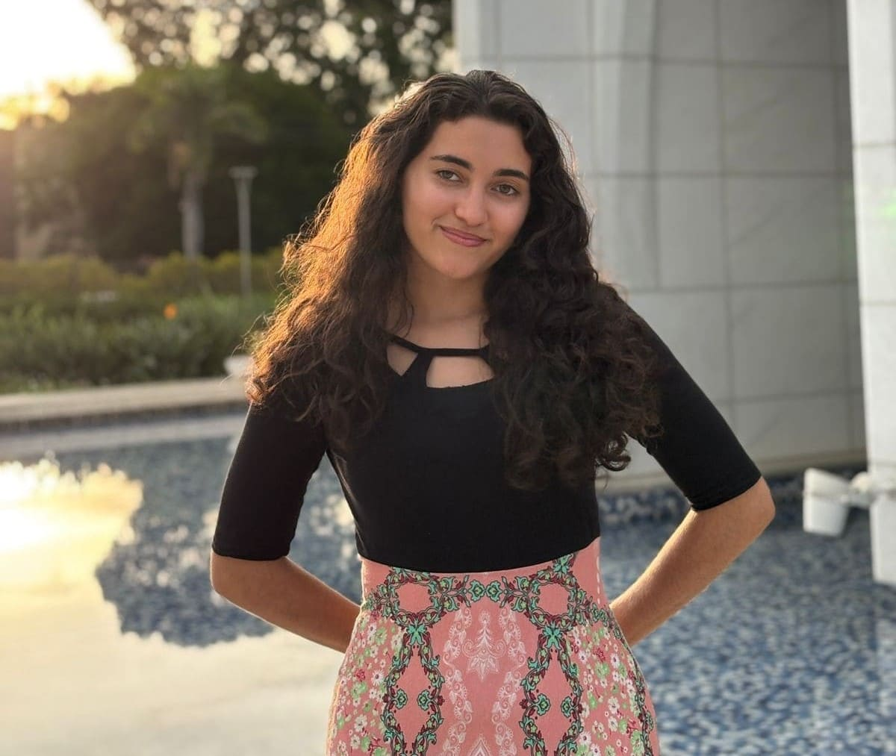

WDD 130 Rafaela Nascimento
I am passionate about learning new things and broadening my horizons. I enjoy writing and reading, with a special love for anything artistically.

I am passionate about learning new things and broadening my horizons. I enjoy writing and reading, with a special love for anything artistically.
